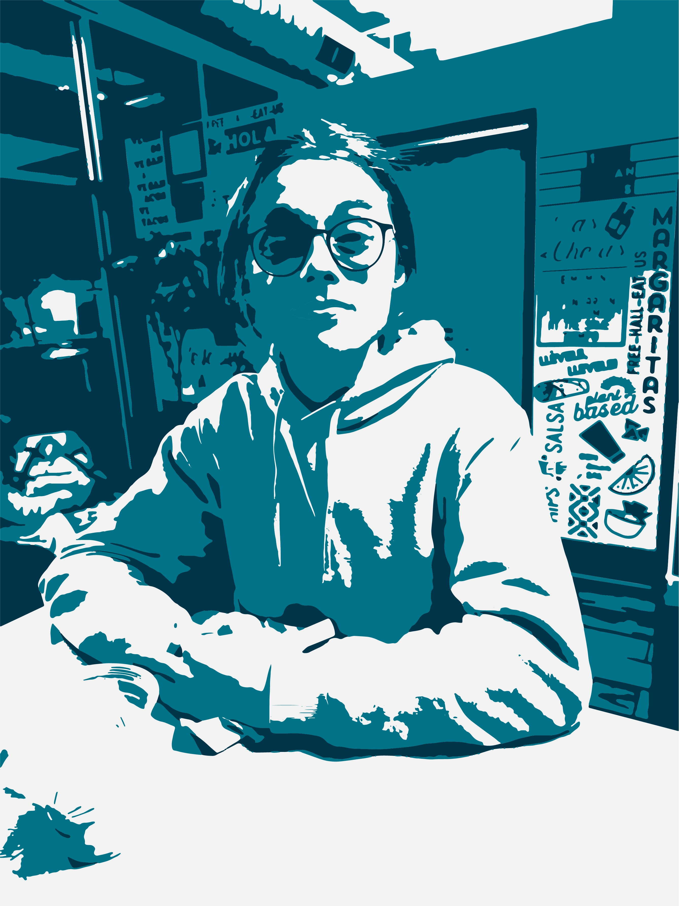

About Me

Hello! My name is Jett. I was born and raised in San Diego, though I lived with my grandparents in Pennsylvania for a while as well. I love travelling and want to visit many countries throughout my life. Offline, I enjoy running, playing guitar, and cleaning. Some of my online hobbies include (but are not limited to) playing video games, drawing, animating, listening to music, and talking to my friends over Discord! I love electronics, and I often spend WAY too much on both software and hardware. I put LEDs on pretty much everything I own (especially my PC), and I love the color purple. In my free time, I also love reading books on my Kindle, as well as manga/manhwa/webcomics on my phone and computer.
I talk a lot online, but I am very shy in person and have trouble talking to people I don't know well. If you ever see me in person, I always have bags under my eyes due to insomnia :'(. My dad is a graphic designer and is part of my inspiration for taking this class. He is a big role model to me, and making him proud is a big goal of mine. My step-mother is also one of my role models, as she has supported me ever since I was a small child and helped me with all of my problems. In my hometown, I have 4 pugs, all of which are rescues, as well as 2 cats and a rabbit. Cats are by far my favorite animal, and I spend about an hour a day watching funny cat videos on social media. I don't have many friends, but when I do make friends I try to pick ones that are interesting and fun people to interact with :).